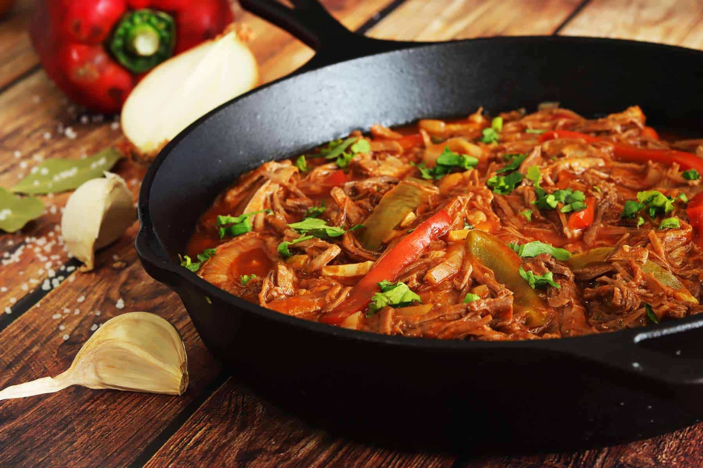

Ropa Vieja

Descripcion
Tremendo preparado de carne desmechada coninada lentamente con muchos vegetales, ideal para acompaniar con arroz o en una tortilla tipo taco! Esta receta muy sabrosa y proteica le va a dar un giro caribenio a tus comidas.
Aunque la receta surge como una alternativa para recuperar carne vieja de comidas previas (de aqui sale su nombre), en esta oportunidad la vamos a hacer con todos ingredientes frescos para mas placer. Es perfectamente freezable y de hecho en esta receta estan las cantidades para hacer un x3 y que te quede bastante para guardar!
Ingredientes
- 2 kg de carne, idealmente entrania, pero puede ser vacio o bola de lomo
- Sal y pimienta a gusto(bastante)
- 2 cebollas grandes o 3 medianas picada chikita
- 2 cebollas de verdeo, picadas chikitas
- 2 morrones verdes en julianas
- 2 morrones rojos en julianas
- 2 morrones amarillos en julianas
- 6 dientes de ajo pelados y apretados
- 2 cucharadas soperas aprox de ajo deshidratado
- 2 cucharaditas de ajo en polvo
- 2 cucharaditas de oregano
- 2 cucharaditas de paprika
- 2 cucharaditas de comino (ojo con este)
- 1 carton grande de pure de tomate (520ml creo)
- 1 cucharada de azucar (si es morena mejor)
- Agua si hiciera falta (normalmente no)
- Jugo de 2 limas
Pasos
- Calentar una olla piola y agregar un poco de aceite. Salpimentar la carne y cortarla en pedazos grandes tipo estofado para que entren en la olla.
- Por tandas, ir tirando la carne en la olla a fuego medio alto hasta dorar de ambos lados, para luego reservarlos en un bowl a parte. Conservar lo quemadito de la olla.
- Agregar cebollas, ajos y morrones ya picados y darles un toque de sal. Cocinar a fuego moderado hasta que doren.
- Agregar las especias (polvo de ajo, oregano paprika y comino), revolver y cocinar un minuto mas. Luego agregar el pure de tomate y el jugo de una lima, y volver a incorporar la carne en la olla. Empujarla hacia el fondo de la olla para que quede tapada y de no haber suficiente liquido, agregar agua.
- Cocinar a fuego mas que minimo por 1hr o hr y media, hasta que la carne se pueda desarmar facilmente
- Con la ayuda de dos tenedores, deshilachar la carne y volverla a la olla. Checkear sal y pimienta y estamos. Se come con arroz blanco o en taco. O en lo que quieras, ya estas grande.